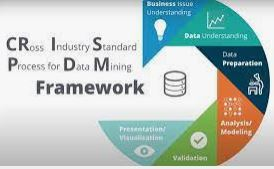
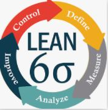
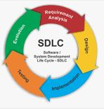
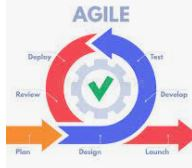
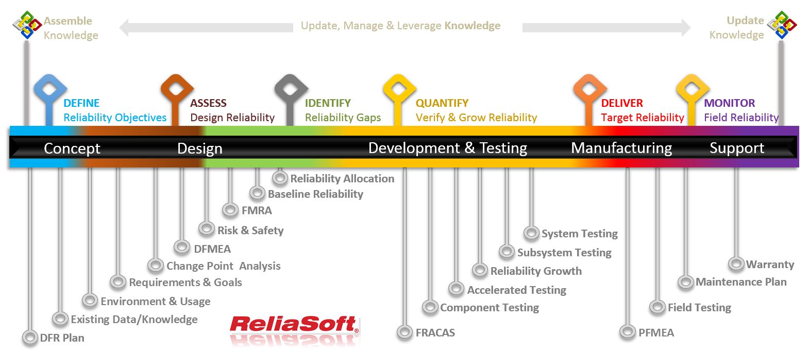
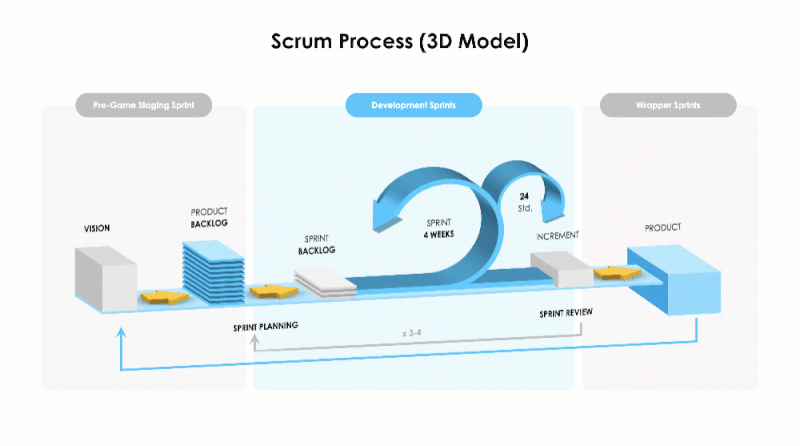
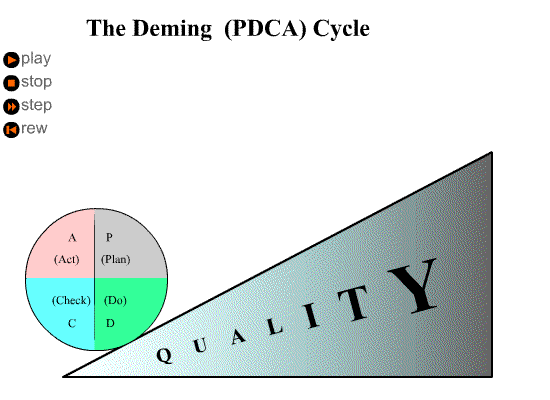
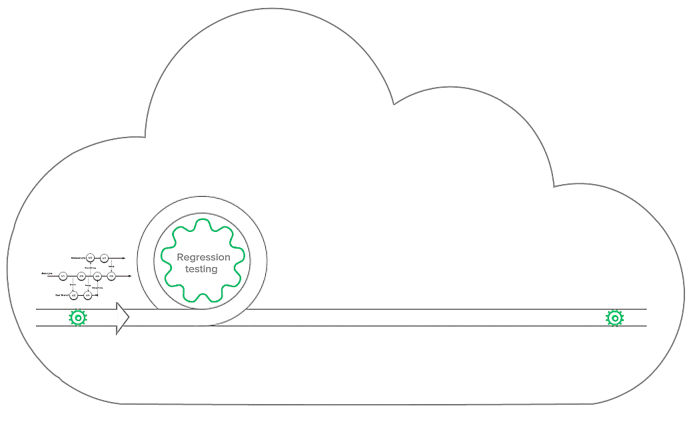
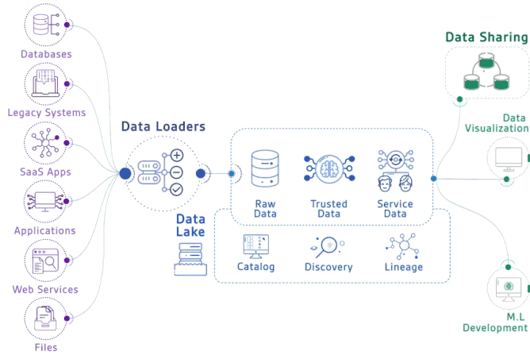

Individuals and Interactions Over Processes and Tools
Working Software Over Comprehensive Documentation
Customer Collaboration Over Contract Negotiation
Responding to Change Over Following a Plan
Testing Life Cycle:Requirement analysis,Test planning,Test case design,Test environment setup,Test execution,Test closure
Test Stages:Unit Tests, Integration Tests, System Tests, Acceptance Tests.
Data Mining:Business understanding,Data understanding,Data preparation,Modeling,Evaluation, Deployment
Six Sigma D.M.A.I.C Cycle: Define, Measure, Analyze, Improve, Control
Six Sigma D.F.S.S Cycle: Define, Measure, Analyze, Design and Verify
Lean development: value, value stream, flow, pull, and perfection.
The Tools:
Common reusable tools and skill sets:









The Quotes:
Quotes on Quality Engineering (Deming and others):
"Put a good person in a bad system and the bad system wins, no contest." ~ W. Edwards Deming
"In God we trust; all others bring data." ~ W. Edwards Deming
"Two basic rules of life are: 1) Change is inevitable. 2) Everybody resists change." ~ W. Edwards Deming
"The ultimate purpose of collecting the data is to provide a basis for action or a recommendation." ~ W. Edwards Deming
"Just because you can measure everything doesn't mean that you should." ~ W. Edwards Deming
"Quality is everyone's responsibility." ~ W. Edwards Deming
"The cost of quality is the expense of doing things wrong." ~ Phil Crosby
"If we deliver on time, but the product has defects, we have not delivered on time." ~ Phil Crosby
"Quality is the result of a carefully constructed cultural environment. It has to be the fabric of the organization, not part of the fabric." ~ Phil Crosby
"Quality is free. It's not a gift, but it's free. The 'unquality' things are what cost money."" ~ Phil Crosby
"Quality planning consists of developing the products and processes required to meet customer's needs" ~ Joseph M. Juran
"...every successful quality revolution has included the participation of upper management. We know of no exceptions." ~ Joseph M. Juran
"For many phenomena, 80% of consequences stem from 20% of the causes." ~ Joseph M. Juran
"Lean is a way of thinking- not a list of things to do" ~ Shigeo Shingo
"The most dangerous kind of waste is the waste we do not recognize." ~ Shigeo Shingo
"Unless you change direction, you will end up where you are headed." ~ Shigeo Shingo
"Cost is more important than quality but quality is the best way to reduce cost." ~ Genichi Taguchi
"Testers don't like to break things; they like to dispel the illusion that things work." ~ Kaner, Bach, Pettichord
"A pinch of probability is worth a pound of perhaps." ~ James Thurber
"Discovering the unexpected is more important than confirming the known." ~ George E. P. Box
"Just because you've counted all the trees doesn't mean you've seen the forest." ~ Anonymous
The Jokes:
Jokes about quality, processes and etc
<
<
<
<
<
<
<
<
<
<
<
<
Support link: Email Author
Testing Panels for Automation. Using the Google Search, Data Driven Web testing.MoreTest


 <
< <
< <
< <
< <
< <
< <
< <
< <
< <
<